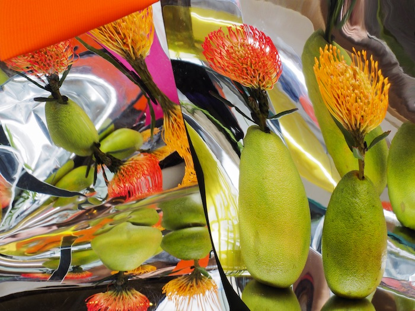
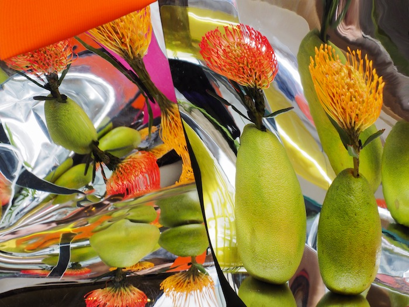

XXY XYX YXX
XXY, XYX, YXX are three series inspired by the mathematical coordinates
XYZ, although slightly modified to represent a distorted spatial reality.
The crucial first step of this work is a handmade installation combining
colorful objects, mirrors, fruits, and reflective paper. By playing with
angle, light, and the plastic characteristics of these objects, a “tricky”
image is created, one in which the viewer can try to recognize mundane
objects detached from their function and meaning. This fabricated world
then survives only in the frame of the photograph.
These images represent my interest in destabilizing and remodeling materiality through the camera. Everyday objects are interesting materials because their ubiquity makes them malleable— an image of little value that is easy to manipulate into something new. In this process, I rely on my hands to conjure up an image, and the camera acts as a witness to it.
These images represent my interest in destabilizing and remodeling materiality through the camera. Everyday objects are interesting materials because their ubiquity makes them malleable— an image of little value that is easy to manipulate into something new. In this process, I rely on my hands to conjure up an image, and the camera acts as a witness to it.